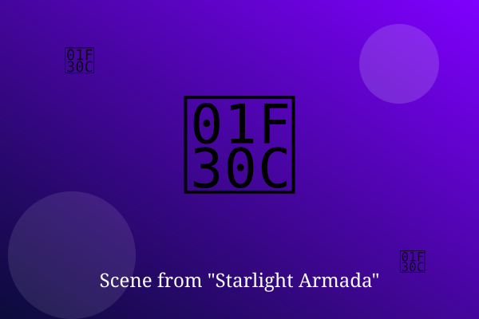

Chapter 1: The Long Voyage Begins

The Armada had been drifting for three hundred years. Admiral Sen was the first to see the star that did not belong.
'Check the charts again,' she told her navigator. He had checked six times. It was a sun, and it had planets.
Across a thousand ships, the lights flickered on one by one as the news spread. Home, perhaps, at last.
— End of Chapter —